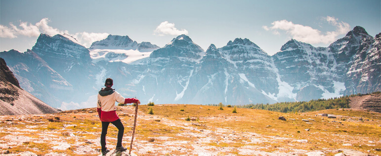

Трекинг походы
Это разновидность пешего туризма и так называют переходы по разным местам, чаще всего это горы или леса. Любители трекинга очень сильно ценят в нём не только возможность насладиться прелестью природы, но и встретиться с препятствиями, преодолевая их самостоятельно. Трекинг – это не только планомерное движение по заданному маршруту, но и познавательное путешествие. Пешеходные походы являются возможностью увидеть страну изнутри, с ее традициями и культурой.
Трекинг будет полезным для всех людей без исключения, к нему нет почти никаких ограничений по возрасту. Поэтому в небольших 1 - 2 дневных походах можно поучаствовать всей семьей. Большие походы, которые длятся по несколько недель, позволяют обходить другие страны и увидеть их куда более красивыми и настоящими, чем в рекламных проспектах. Многие европейцы пенсионного возраста принимают участие в таких походах. Переходы за день обычно длятся пять - семь часов. Каждый день в походе богат на события и новые ощущения. Всё больше людей в мире выбирают этот вид отдыха.
Чтобы заняться трекингом, не нужно дорогостоящего снаряжения или бронирования номера в гостиницах. Для этого достаточно удобной для похода одежды, крепких ботинок, вместительного рюкзака и готовности к новым впечатлениям. Все походы сопровождает опытный инструктор, который поможет со всеми сложностями, которые могут возникнуть во время похода.
мыс Лизард, Корнуолл, Великобритания
Высокий изрезанный берег, черные скалы, пронзительные крики птиц — этого и ждешь от самой южной точки Великобритании. По мысу Лизард хорошо бродить одному или за руку с любимым человеком, вглядываться в туманный горизонт и гадать, сколько кораблей осталось у этих берегов на пути через Атлантику. За свою судьбу не беспокойтесь: прогулка по тропе занимает 2,5 часа и не требует специальных навыков. Прихватите только термос с горячим чаем и корнуоллские мясные пирожки, чтобы в самом укромном месте устроить романтический обед.
Окунитесь в Софийские озера
Где: Архыз, Карачаево-Черкесия, Россия. Софийские озера в Архызе кажутся миражом. В ясную погоду они ярко-бирюзового цвета — как будто внутрь плеснули краски. Но вы зайдите в прохладную воду и ощутите: эта неземная красота существует по правде. И добраться до нее — всего 3–4 часа ходу. Маршрут начинается от Ледниковой фермы, куда можно доехать по плохой грунтовке от поляны Таулу. Дальше по натоптанной тропе поднимитесь на перевал Иркиз, от которого остается еще 10 минут. Если не уверены, что сориентируетесь, спросите совета у местных или у других походников, которых в Архызе не придется долго искать.
Ни в чем себе не отказывайте на Ликийской тропе
Где: Турция. Хотите тишины и романтики, но без походных лишений — выходите на Ликийскую тропу в Турции. Это размеченный 540-километровый маршрут от Фетхие до Анталии. Он тянется вдоль Средиземного моря по горам, лесам, пляжам и оливковым рощам. Вся тропа займет месяц, но можно выбрать кусочек любой длины. К примеру, за 3 дня доберетесь от Каша до Демре, а по пути полюбуетесь руинами древних городов и вырубленными в скалах гробницами. Палатку и еду не тащите: в гостеприимных гестхаусах ждут горячие лепешки пиде, густые супы чорба, нежные кебабы и рыба на гриле. Бухты в стиле баунти и ласковое солнце прилагаются.